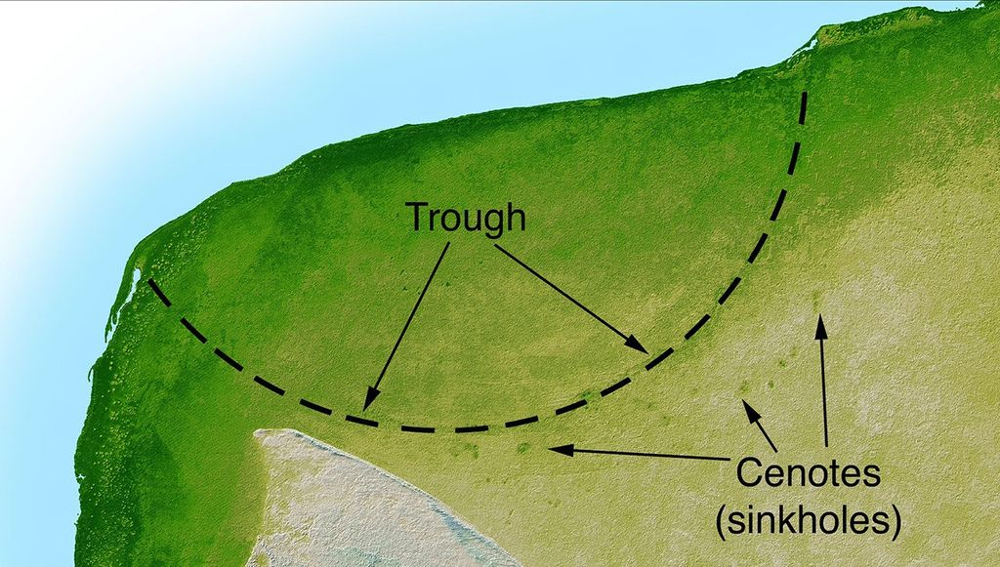

What written and physical sources state, with their dates as given. Each line says whether it is the source’s statement, our conversion, our model, our present-day reference or a gap. No lines or arrows connect entries.
Deep time
This release shows the conventional Big Five mass extinctions, placed on the ICS chart. Empty stretches are not periods where nothing happened. Lanes fill as their evidence is checked.
The timeline axis is unavailable right now; every entry, date and source is listed below.
Earth systems and life · No entries yet
Mass extinctions (5)
Human relatives · No entries yet
Human history · No dated entries on the axis yet
Chart: ICS International Chronostratigraphic Chart v2026-06 (CC BY 4.0). Episode sources as cited in each entry (CC BY 4.0 unless stated). Values reformatted by Mother Earth. ICS chart ↗ (opens in a new tab) · CC BY 4.0 ↗ (opens in a new tab) · Cohen K, Harper D, Gibbard P, Car N. The ICS international chronostratigraphic chart this decade. Episodes 2025;48:105-115. https://doi.org/10.18814/epiiugs/2025/025001.
The Latin Library — Letters, Book 6 (one page). Find Letter 6.16, §§4–5 and §22. The link opens the whole book; it does not jump to the letter. Edition not stated by the host.
We checked a copy of this page on ; its sha256 is b59e819a2793d7e8a7ddfeb5ce716619acbb88390615ba2530e28d3aafcfe281. The hash identifies the copy we checked. The live page can change, and what it shows now is not necessarily what we checked.
How we converted
24 August, Julian calendar — our conversion of the checked page’s reading. The letter gives the ninth day before the Kalends of September; counting back inclusively with 1 September as day one, the ninth day is 24 August. No Gregorian or proleptic date is given. Ours.
Hour and year
Hour: “about the seventh hour”, as Pliny gives it.
Our model: Roman hours divided daylight into twelve seasonal hours, so the seventh hour began at local midday.
Modern clock time: unset — daylight at Misenum on that date was not established.
Year: not stated by this source (the whole letter, §1–22, was checked).
Place
Misenum — as Pliny states (§4).
Bay of Naples — our present-day reference.
What Pliny reports
Pliny reports that his mother pointed out the cloud to his uncle, who commanded the fleet at Misenum (§4).
He writes that it was learned later that the cloud came from Vesuvius (§5).
Pliny says he set down what he witnessed and what he heard soon afterwards, without saying which details are which (§22).
Uncertain
Written after his uncle’s death; how long after is not stated (§1).
Scholarly note on the date (separate, attributed)
2021 EGU conference abstract, withdrawn on 8 March 2021.
D’Auria, De Micco & Di Pasquale’s abstract reports that the classical reading of Pliny’s account gives 24 August, and describes a proposal by some scholars to date the eruption to 24 October instead; it suggests the discrepancy is probably a medieval copying error. It refers to the eruption as AD 79; that year is the abstract’s statement, not Pliny’s.
We read the abstract text via OpenAlex’s stored copy on 9 Nov 2026 at 14:03:45 UTC. The publisher’s page now shows the withdrawal notice without the abstract text (read 9 Nov 2026).
Not adjudicated by Mother Earth.
Evidence
One historical account (Pliny, Letters 6.16) · later recollection · no independent corroboration.
Latin only — no translation reached.
The scholarly note is not counted as evidence for this entry.
Evidence last reviewed:
End-Ordovician mass extinction
How we know
Approximate extinction interval
~445–443 Ma
The review reports that most authorities place the extinction at about 445–443 million years ago.
Harper DAT (2024) Late Ordovician Mass Extinction: Earth, fire and ice. National Science Review 11(1): nwad319 · section 'Age and duration'. doi 10.1093/nsr/nwad319 ↗ (opens in a new tab) · licence: CC BY 4.0. No correction, retraction or expression of concern on the publisher's page (checked 10 Nov 2026).
Context and limits
Context
The same section sets out three readings of how it unfolded: two main extinction pulses (the first at the base of the Hirnantian Stage, the second in its middle), a single more prolonged phase, or an additional earlier phase in the early Katian. The pulses are placed by rock layers, not by dates, so they are not drawn on the axis.
Harper DAT (2024) Late Ordovician Mass Extinction: Earth, fire and ice. National Science Review 11(1): nwad319 · section 'Age and duration'. doi 10.1093/nsr/nwad319 ↗ (opens in a new tab) · licence: CC BY 4.0. No correction, retraction or expression of concern on the publisher's page (checked 10 Nov 2026).
Chart reference
ICS chart boundary (v2026-06)
Ordovician–Silurian 443.1 ± 1.0 Ma
Shown beside the source value, not merged with it. The chart supplies the boundary only, not the event date.
Review and changes
Evidence last reviewed:
Frasnian–Famennian extinction (Late Devonian)
This entry covers the Frasnian–Famennian event only. The later end-Devonian (Hangenberg) crisis is outside this check.
How we know
Boundary age: no older than
372.4 Ma
A volcanic ash bed just below the Frasnian–Famennian boundary in Germany was dated to 372.360 ± 0.053 million years (2σ, measurement uncertainty only), so the boundary can be no older than 372.4 million years.
Percival LME et al. (2018) Precisely dating the Frasnian–Famennian boundary: implications for the cause of the Late Devonian mass extinction. Scientific Reports 8: 9578 · Discussion, first paragraph. doi 10.1038/s41598-018-27847-7 ↗ (opens in a new tab) · licence: CC BY 4.0. No correction, retraction or expression of concern on the publisher's page (checked 10 Nov 2026).
Modelled boundary-age range
371.93–371.78 Ma (371.86 ± 0.08 Ma), modelled
Combining that date with a published age model gives a boundary age of 371.93–371.78 million years (371.86 ± 0.08).
Assumes: the cited age model is correct; the section is stratigraphically complete; sedimentation was constant between the two Kellwasser horizons.
Percival LME et al. (2018) Precisely dating the Frasnian–Famennian boundary: implications for the cause of the Late Devonian mass extinction. Scientific Reports 8: 9578 · Discussion, first paragraph. doi 10.1038/s41598-018-27847-7 ↗ (opens in a new tab) · licence: CC BY 4.0. No correction, retraction or expression of concern on the publisher's page (checked 10 Nov 2026).
Context and limits
Context
These values date the boundary, not the length of the extinction. How long the extinction lasted is not shown.
Percival LME et al. (2018) Precisely dating the Frasnian–Famennian boundary: implications for the cause of the Late Devonian mass extinction. Scientific Reports 8: 9578 · Introduction and Discussion. doi 10.1038/s41598-018-27847-7 ↗ (opens in a new tab) · licence: CC BY 4.0. No correction, retraction or expression of concern on the publisher's page (checked 10 Nov 2026).
Chart reference
ICS chart boundary (v2026-06)
Frasnian–Famennian 372.15 ± 0.46 Ma
Shown beside the source value, not merged with it. The chart supplies the boundary only, not the event date.
Review and changes
Evidence last reviewed:
End-Permian mass extinction
How we know
Estimated extinction onset
251.941 ± 0.037 Ma (uncertainty as stated by the source)
The authors place the onset of the mass extinction at 251.941 ± 0.037 million years ago, citing their earlier high-precision dating.
Burgess SD, Muirhead JD, Bowring SA (2017) Initial pulse of Siberian Traps sills as the trigger of the end-Permian mass extinction. Nature Communications 8: 164 · section 'A relative timing framework'. doi 10.1038/s41467-017-00083-9 ↗ (opens in a new tab) · licence: CC BY 4.0. No correction, retraction or expression of concern on the publisher's page (checked 10 Nov 2026).
Chart reference
ICS chart boundary (v2026-06)
Permian–Triassic 251.902 ± 0.024 Ma
Shown beside the source value, not merged with it. The chart supplies the boundary only, not the event date.
Review and changes
Evidence last reviewed:
End-Triassic mass extinction
How we know
Approximate age of the extinction level in the rock record
~201.5 Ma (approximate, as stated)
In each of the three sections studied, a large sulfur-isotope shift about 201.5 million years ago coincides with the level in the rock record that marks the extinction.
He T et al. (2020) An enormous sulfur isotope excursion indicates marine anoxia during the end-Triassic mass extinction. Science Advances 6: eabb6704 · Results, sulfate sulfur-isotope trends. doi 10.1126/sciadv.abb6704 ↗ (opens in a new tab) · licence: CC BY 4.0. No correction, retraction or expression of concern in the article text on the publisher's page (checked 10 Nov 2026).
Chart reference
ICS chart boundary (v2026-06)
Triassic–Jurassic ~201.4 ± 0.2 Ma
Shown beside the source value, not merged with it. The chart supplies the boundary only, not the event date.
Review and changes
Evidence last reviewed: · Changed in revision tl-2026-11-R2: wording clarified
End-Cretaceous mass extinction

The image could not be loaded. Its caption and the account remain available.
Radar height map of the north-west Yucatán Peninsula, Mexico, with NASA's labels. The dashed line follows a shallow trough, 3 to 5 metres deep and about 5 kilometres wide, which NASA describes as a surface expression of the buried crater's outer boundary. Sinkholes (cenotes) are marked along it. Heights are greatly exaggerated. This is a rendering of elevation measurements, not a photograph of the crater. Data: Shuttle Radar Topography Mission, February 2000. Image: NASA/JPL (PIA03379) ↗ (opens in a new tab) · used under NASA's Images and Media Usage Guidelines ↗ (opens in a new tab)
About 66 million years ago, a mass extinction marked the end of the Cretaceous Period.[1][2]An estimated three-quarters of species were lost, including every dinosaur that was not a bird.[1][2]At that time a large asteroid struck what is now Mexico's Yucatán Peninsula, forming the Chicxulub crater, now buried beneath younger rock.[2][3][4][5]Renne and colleagues (2013) reported dating that places the impact and the extinction within 32,000 years of each other.[6]That figure is a limit on how far apart the two could be, not a measured gap between them.[6]At two sites in the western United States, researchers identified the boundary by shock-altered minerals, an unusual enrichment in iridium, and the disappearance of fossil pollen and spores.[7]
Sources for these sentences
O'Connor LK et al. (2024) Terrestrial evidence for volcanogenic sulfate-driven cooling event ~30 kyr before the Cretaceous-Paleogene mass extinction. Science Advances 10: eado5478 · Introduction. doi 10.1126/sciadv.ado5478 ↗ (opens in a new tab) · licence: CC BY 4.0. No correction, retraction or expression of concern in the article text on the publisher's page (checked 10 Nov 2026).
Wilf P, Carvalho MR, Stiles E (2023) The end-Cretaceous plant extinction: Heterogeneity, ecosystem transformation, and insights for the future. Cambridge Prisms: Extinction 1: e14 · Introduction. doi 10.1017/ext.2023.13 ↗ (opens in a new tab) · licence: CC BY 4.0. No correction, retraction or expression of concern on the publisher's page (checked 10 Nov 2026).
Schulte P et al. (2010) The Chicxulub asteroid impact and mass extinction at the Cretaceous-Paleogene boundary. Science · Abstract. doi 10.1126/science.1177265 ↗ (opens in a new tab) · licence: no open licence stated on the page read. No correction, retraction or expression of concern on the publisher's page (checked 23 Nov 2026). Read as: abstract only.
NASA/JPL, record PIA01723: Space Radar Image of the Yucatan Impact Crater Site. record ↗ (opens in a new tab) · read .
NASA/JPL, record PIA03379: Shaded Relief with Height as Color, Yucatan Peninsula, Mexico. record ↗ (opens in a new tab) · read .
Renne PR et al. (2013) Time scales of critical events around the Cretaceous-Paleogene boundary. Science 339: 684–687 · Abstract. doi 10.1126/science.1230492 ↗ (opens in a new tab) · licence: no open licence stated on the page read. No correction, retraction or expression of concern on the publisher's page (checked 23 Nov 2026). Read as: abstract only.
O'Connor LK et al. (2024) Terrestrial evidence for volcanogenic sulfate-driven cooling event ~30 kyr before the Cretaceous-Paleogene mass extinction. Science Advances 10: eado5478 · Abstract; Fig. 1 caption and the passage after it. doi 10.1126/sciadv.ado5478 ↗ (opens in a new tab) · licence: CC BY 4.0. No correction, retraction or expression of concern in the article text on the publisher's page (checked 10 Nov 2026).
How we know
Impact age
66.02 Ma (uncertainty not stated)
The Chicxulub impact in Yucatán is dated to 66.02 million years ago (no uncertainty given in the passage).
Wilf P, Carvalho MR, Stiles E (2023) The end-Cretaceous plant extinction: Heterogeneity, ecosystem transformation, and insights for the future. Cambridge Prisms: Extinction 1: e14 · Introduction. doi 10.1017/ext.2023.13 ↗ (opens in a new tab) · licence: CC BY 4.0. No correction, retraction or expression of concern on the publisher's page (checked 10 Nov 2026).
Extinction placed at the dated impact (synchrony evidence cited)
at the impact age, 66.02 Ma
The extinction is placed at the dated impact because high-precision dating has established that the impact and the extinction were synchronous.
O'Connor LK et al. (2024) Terrestrial evidence for volcanogenic sulfate-driven cooling event ~30 kyr before the Cretaceous-Paleogene mass extinction. Science Advances 10: eado5478 · Introduction. doi 10.1126/sciadv.ado5478 ↗ (opens in a new tab) · licence: CC BY 4.0. No correction, retraction or expression of concern in the article text on the publisher's page (checked 10 Nov 2026).
Evidence and interpretations
Wilf and colleagues (2023) call the impact the extinction's "unique cause".
Wilf P, Carvalho MR, Stiles E (2023) The end-Cretaceous plant extinction: Heterogeneity, ecosystem transformation, and insights for the future. Cambridge Prisms: Extinction 1: e14 · Introduction. doi 10.1017/ext.2023.13 ↗ (opens in a new tab) · licence: CC BY 4.0. No correction, retraction or expression of concern on the publisher's page (checked 10 Nov 2026).
Schulte and colleagues (2010), in a synthesis of rock records from around the world, concluded that the impact triggered the extinction.
Schulte P et al. (2010) The Chicxulub asteroid impact and mass extinction at the Cretaceous-Paleogene boundary. Science · Abstract. doi 10.1126/science.1177265 ↗ (opens in a new tab) · licence: no open licence stated on the page read. No correction, retraction or expression of concern on the publisher's page (checked 23 Nov 2026). Read as: abstract only.
Hull and colleagues (2020), using carbon-cycle models and past-temperature records, found support for the main Deccan gas release beginning and ending before the impact, with only the impact coinciding with the extinction.
Hull PM et al. (2020) On impact and volcanism across the Cretaceous-Paleogene boundary. Science 367 (6475) · Abstract. doi 10.1126/science.aay5055 ↗ (opens in a new tab) · licence: copyright the authors, exclusive licensee AAAS (not an open licence). No correction, retraction or expression of concern on the publisher's page (checked 23 Nov 2026).
Other studies examine what part was played by the Deccan Traps, a volcanic province in what is now India.
O'Connor LK et al. (2024) Terrestrial evidence for volcanogenic sulfate-driven cooling event ~30 kyr before the Cretaceous-Paleogene mass extinction. Science Advances 10: eado5478 · Introduction. doi 10.1126/sciadv.ado5478 ↗ (opens in a new tab) · licence: CC BY 4.0. No correction, retraction or expression of concern in the article text on the publisher's page (checked 10 Nov 2026).
Hull PM et al. (2020) On impact and volcanism across the Cretaceous-Paleogene boundary. Science 367 (6475). doi 10.1126/science.aay5055 ↗ (opens in a new tab) · licence: copyright the authors, exclusive licensee AAAS (not an open licence). No correction, retraction or expression of concern on the publisher's page (checked 23 Nov 2026).
Schoene and colleagues (2019) dated the start of one pulse of eruptions to tens of thousands of years before the impact and the extinction.
Schoene B et al. (2019) U-Pb constraints on pulsed eruption of the Deccan Traps across the end-Cretaceous mass extinction. Science 363: 862–866 · Abstract. doi 10.1126/science.aau2422 ↗ (opens in a new tab) · licence: no open licence stated on the page read. No correction, retraction or expression of concern on the publisher's page (checked 23 Nov 2026).
They say their findings support models in which both events drove the environmental deterioration linked to the extinction.
Schoene B et al. (2019) U-Pb constraints on pulsed eruption of the Deccan Traps across the end-Cretaceous mass extinction. Science 363: 862–866 · Abstract. doi 10.1126/science.aau2422 ↗ (opens in a new tab) · licence: no open licence stated on the page read. No correction, retraction or expression of concern on the publisher's page (checked 23 Nov 2026).
O'Connor and colleagues (2024) note that the dating does not exclude Deccan volcanism as a contributing or primary cause.
O'Connor LK et al. (2024) Terrestrial evidence for volcanogenic sulfate-driven cooling event ~30 kyr before the Cretaceous-Paleogene mass extinction. Science Advances 10: eado5478 · Introduction. doi 10.1126/sciadv.ado5478 ↗ (opens in a new tab) · licence: CC BY 4.0. No correction, retraction or expression of concern in the article text on the publisher's page (checked 10 Nov 2026).
Their own temperature records, from two sites in the western United States, suggest that on land volcanic climate change was not the primary cause.
O'Connor LK et al. (2024) Terrestrial evidence for volcanogenic sulfate-driven cooling event ~30 kyr before the Cretaceous-Paleogene mass extinction. Science Advances 10: eado5478 · Abstract and Discussion. doi 10.1126/sciadv.ado5478 ↗ (opens in a new tab) · licence: CC BY 4.0. No correction, retraction or expression of concern in the article text on the publisher's page (checked 10 Nov 2026).
Context and limits
Context
This entry does not show how the extinction unfolded for each group of living things, or how long recovery took.
Chart reference
ICS chart boundary (v2026-06)
Cretaceous–Paleogene 66.00 Ma
Shown beside the source value, not merged with it. The chart supplies the boundary only, not the event date.
Account and image reviewed: . This covers the added sentences, their sources and the image record. It is not a review of the entry as a whole; the earlier timing claims keep their own dates.
What changed
— revision tl-2026-11-R3
Account and image added: End-Cretaceous mass extinction. The entry now opens with a short account of what the evidence shows, gives attributed findings on what caused the extinction, including where studies differ, and shows one image. The earlier line "Causes are not shown in this release." is retired. Why: the earlier entry presented timing claims without a cause account. Dates, the earlier sources and the mark on the axis are unchanged. The entry's evidence was last reviewed . Open the entry
— revision tl-2026-11-R2
Wording clarified: End-Triassic mass extinction. The label "Approximate age of the extinction horizon" now reads "Approximate age of the extinction level in the rock record", with the matching change in the entry text. Why: plainer wording for a general reader. Dates, sources and the mark on the axis are unchanged. The entry's evidence was last reviewed . Open the entry
— revision tl-2026-11-R1 (first release)
Added the conventional Big Five mass extinctions on the deep-time axis, placed on the ICS chart (v2026-06).
The Pliny entry (on this page since 9 Nov 2026) moved into the catalogue. It stays on the dates-without-a-year shelf.